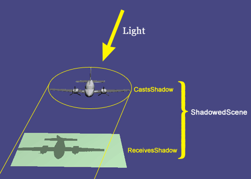
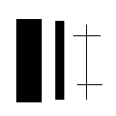
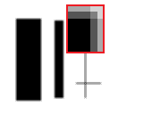

The osgShadow nodekit is a powerful collection of classes for adding shadows to your scene. Thanks to this powerful nodekit, you don't need to learn the complex calculations, multi-texturing units and programmable shaders involved in creating shadows. Just add these nodes to your scene graph, and the work is done for you.
The class documentation for osgShadow shows the classes and methods. This document describes how to use them.
In the simplest case, there is a single light enabled in your scene. You create a ShadowedScene node (a subclass of osg::Group), and add children to it. A ShadowTechnique is chosen and assigned to the ShadowedScene. The children of ShadowedScene can have the CastsShadow bit set in their node mask, and/or the ReceivesShadow bit. As the scene is rendered, ShadowedScene calls the methods of its ShadowTechnique to compute the shadows and decorate the scene graph with StateSets to render them:

As of OSG 2.4, there are five different shadow techniques available. All of them have varying requirements on the capabilities of your 3D card. If your card's shader engine and driver does not support certain commands, then it will not be capable of using some of these techniques.
To summarize:
| Method | uses textures | uses osg::Shader | respects CastsShadow | respects ReceivesShadow | notes |
| ShadowMap | yes | yes | yes | no | Can work fixed-function too without any changes, just call clearShaderList() after init() but before first frame |
| ShadowVolume | no | no | no? | no | |
| ShadowTexture | yes | no | yes | no | Can't do self-shadowing, so setting a node's CastsShadow bit means that node won't receive shadows. |
| SoftShadowMap | yes | yes | yes | no | |
| ParallelSplitShadowMap | yes | yes | yes | no |
Filter 3x3 Matrix:
| 1 | 0 | 1 |
| 0 | 2 | 0 |
| 1 | 0 | 1 |
Filter divisor: 6.0
| original | filtered |
|  |  |
The AmbientBias option on ShadowMap and SoftShadowMap is used to define how much shadows darken the scene. Its usually used to set up lower bound for shadowing factor, in the range [0..1]. If such shadow factor was used directly, shadowed areas would be completely black. Sometimes we want to make them to be only a bit darker than lit areas. By setting AmbientBias.x to some value from range 0..1 one limits minimal shadow value (hence AmbientBias because shadowed areas are lit only by ambient component). AmbientBias.y is usually set up to 1 - AmbientBias.x but it may be also set bit larger or smaller values used to make shadow range more dynamic or flat.
Generally speaking, a projected texture is used to render the shadow. This means that if your shadow casting geometry is very large, then the texture resolution must be spread over a large area. This can produce blocky aliasing in the shadow. Therefore, it is advisable to keep the bounding sphere of your shadow casting geometry as small as possible. Just placing a ShadowedScene above a large scene graph, where everything casts a shadow, is not likely to produce good results. You should very deliberately choose which nodes will cast shadows.
You can also increase the resolution of the texture with the ShadowTechnique's setTextureResolution method, but this is not a long term solution but rather just hides the problem. More advanced shadow techniques like PSSM (Parallel-Split Shadow Maps) or LiSPSM (Light-Space Perspective Shadow Maps) can help in those cases. (note: for now only PSSM is integrated into osgShadow and it does not work in all cases).
This code loads two cessnas, offset from each other. The first cessna casts a shadow on the second. In fact, because ShadowMap treats everything as shadowed, the first cessna also self-shadows.
const int ReceivesShadowTraversalMask = 0x1;
const int CastsShadowTraversalMask = 0x2;
osg::ref_ptr shadowedScene = new osgShadow::ShadowedScene;
shadowedScene->setReceivesShadowTraversalMask(ReceivesShadowTraversalMask);
shadowedScene->setCastsShadowTraversalMask(CastsShadowTraversalMask);
osg::ref_ptr sm = new osgShadow::ShadowMap;
shadowedScene->setShadowTechnique(sm.get());
int mapres = 1024;
sm->setTextureSize(osg::Vec2s(mapres,mapres));
osg::Group* cessna1 = (osg::Group*) osgDB::readNodeFile("cessna.osg");
cessna1->getChild(0)->setNodeMask(CastsShadowTraversalMask);
osg::Group* cessna2 = (osg::Group*) osgDB::readNodeFile("cessna.osg");
cessna2->getChild(0)->setNodeMask(ReceivesShadowTraversalMask);
osg::MatrixTransform* positioned = new osg::MatrixTransform;
positioned->setMatrix(osg::Matrix::translate(40,0,0));
positioned->addChild(cessna1);
shadowedScene->addChild(positioned);
shadowedScene->addChild(cessna2);
The two ShadowedScene masks are there to help the ShadowTechnique implementations differentiate where appropriate between different types of objects in the scene - with some techniques like ShadowTexture this is essential, with others it doesn't make so much sense and actually can be rather awkward to implement. osgShadow library itself is also still quite young with the various implementations still not fully ground out, so some areas that they don't currently implement fully will hopefully be filled out in the future.
For example, with OSG 2.4, ShadowMap respects the CastsShadow bit (only objects with that bit will casts a shadow) but ignores the ReceivesShadow bit (all objects in the shadow scene graph receive shadows - there are technical reasons for this).
Keep in mind that the default node mask in OSG has all bits set: 0xffffffff. This means that every node under a ShadowedScene is set to both case and receive shadows, by default, unless you tell it otherwise. You should be careful when inserting a ShadowedScene into an existing application's scenegraph, as you might have a lot more objects casting shadows than you need, which can spread the shadow resolution very roughly. To solve the problem, disable casting by turning off the bit:
The OSG examples include an application called osgshadow, which gives a very simple demonstration of how to call the osgShadow nodekit.